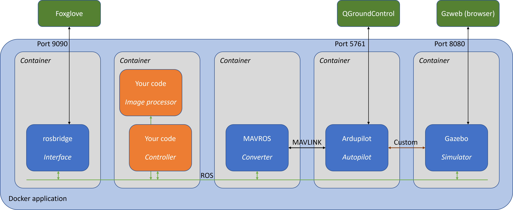

8. Adding perception¶
8.1 Introduction¶
All the other examples in this tutorial focus on controlling the drone. However, you may decide to close the loop on the control problem using some image processing on the camera feed from the drone. This tutorial gives you a framework for doing so using the OpenCV image processing framework. In doing so, you will also learn how to extend the simulation application to: - install third-party libraries and ROS packages, in this case OpenCV and the associated vision_opencv ROS package; and - compile and launch multiple ROS nodes within a modular control system.
OpenCV is a free open-source image processing library. It offers a variety of tools for analyzing and manipulating images, nicely wrapped in a nice Python interface, with good tutorials. OpenCV is not part of ROS, but others have done the work to provide a simple 'bridge' for converting ROS image messages to OpenCV and back. There are also various extra tutorials available online, including this one which I relied on to develop this tutorial. OpenCV is not the latest all-singing-all-dancing deep learning vision solution - but it is easy to learn and probably enough for finding big red blobs in a green world.
Other tutorials have emphasized the importance of modularity and the same applies here. Each module should do one thing well. Our controller.py script provides a nice, coherent set of drone control capability but it's already getting long. It would be cluttered to try and squeeze image processing into it as well, so this example will put the image processing in another file to be run as another ROS node. Some kind of interface will need to be worked out to share information from the perception node to the controller node - but ROS makes that kind of communication easy. Keeping the two separate also helps development: one team member can work on control while another works on perception, without creating conflicts.
8.2 Software deployment¶
The tutorial so far has deliberately hidden a lot of the Starling framework around the controller. You have seen and worked on just the one file controller.py and we have provided some 'magic' that runs that script and a simulator, hooked up together, when you type in that docker-compose... command. Since all we have been changing is the one file, none of the rest of the framework has changed, and that --build bit on the end of the docker-compose... command has made sure to pick up the edited file each time. So far so good, but now we are extending the framework, it is time to look further into the 'magic'. It is covered in depth in the Starling overview chapter of the advanced tutorial but briefly, we will deploy the application shown below:

The steps to get perception working are:
- write the Python code for the image processing
- tell our
fenswood_drone_controllerROS package where to find it - extend the launch file so the image processor is started along with the controller
- make sure the Docker container for the controller has the necessary dependencies installed
If you do the advanced tutorial, you will learn a bit more about how all of this works together and how you might be able to do some more complex things!
8.3 Example code¶
To run this example, use docker-compose up --build as before or run the one in the 6_perception directory. The remainder of this section works through each of the steps identified above, corresponding to a particular file.
8.3.1 Writing the image processing code¶
A separate file fenswood_drone_controller/fenswood_drone_controller/image_processor.py contained the Python code for doing the image processing, such as it is.
Why the repeated name? It happens a lot in Python. The outer directory is the ROS package and the inner one is the Python package. You do need both.
import rclpy
from rclpy.node import Node
from sensor_msgs.msg import Image
import cv2
from cv_bridge import CvBridge
The first two imports of rclpy and Node are standard ROS stuff and the same as for the controller, as we will be developing a class for our own ROS node. The Image class is the standard ROS message type for sharing images. (Happily for those of us who don't know a MOV from an MPEG, ROS hides all the practical pain of image transport from us.) The cv2 library is the entire OpenCV toolset. Finally CvBridge is the thing that converts a ROS image message to an OpenCV image object, or vice versa.
class ImageProcessor(Node):
def __init__(self):
super().__init__('image_processor')
self.br = CvBridge()
As for the controller, a new class is defined as a child of the Node class to represent the image processing node. It calls the parent constructor to get ROS set up. The only other thing it does it create a CvBridge for later use doing the conversions.
def start(self):
# set up subscriber for image
state_sub = self.create_subscription(Image, 'camera/image_raw', self.image_callback, 10)
The start method will set the node actually working by subscribing to the image topic and running the callback on each response. This node is completely callback-driven so there is nothing else to do here.
Note: it's usually a bad idea to do lots of work in callbacks, especially on something quite high-rate like a camera feed. In the exercises, I will ask you to improve upon this.
# on receiving image, convert and log information
def image_callback(self,msg):
img = self.br.imgmsg_to_cv2(msg)
# can do OpenCV stuff on img now
shp = img.shape # just get the size
self.get_logger().info('Got an image of {} x {}'.format(shp[0],shp[1]))
The image callback method does very little for now, but enough to see if everything is working. The CvBridge created in __init__ is used to convert the image message to an OpenCV image object. All I do is extract its size using the shape property and log it.
def main(args=None):
rclpy.init(args=args)
image_node = ImageProcessor()
image_node.start()
rclpy.spin(image_node)
if __name__ == '__main__':
main()
The rest of the file is almost identical to the controller case. The main function creates the node object, starts the subscription, and then uses spin to hand over timing to ROS. The if __name__ ... bit is here out of habit.
8.3.2 Telling ROS where to find it¶
The setup.py file in the upper fenswood_drone_controller directory tells ROS where to find the bits of Python it might need, including scripts we want to run. It's a clumsy set-up but happily we'll only need to edit part...
from setuptools import setup
from glob import glob
package_name = "fenswood_drone_controller"
setup(
name=package_name,
version="0.0.0",
packages=[package_name],
data_files=[
("share/ament_index/resource_index/packages",["resource/"+package_name]),
("share/" + package_name, ['package.xml']),
("share/" + package_name, glob('launch/*.launch.*'))
],
install_requires=["setuptools"],
zip_safe=True,
maintainer="Robert Clarke",
maintainer_email="TODO",
description="Example Python controller for Ardupilot at Fenswood",
license="TODO",
tests_require=["pytest"],
entry_points={
"console_scripts": [
"controller = fenswood_drone_controller.controller:main",
"controller_old_school = fenswood_drone_controller.controller_old_school:main",
"controller_simple_class = fenswood_drone_controller.controller_simple_class:main",
"controller_modular = fenswood_drone_controller.controller_modular:main",
"controller_finite_state = fenswood_drone_controller.controller_finite_state:main",
"image_processor = fenswood_drone_controller.image_processor:main"
]
}
)
There, that bit right at the end: added to the console_scripts list entry in the entry_points dictionary, the item "image_processor = fenswood_drone_controller.image_processor:main" tells ROS that you run an image_processor node by calling the main function in the image_processor module of the fenswood_drone_controller package.
Please don't ask the general principles behind this - unless you want to get really into Python and ROS packaging, just follow the pattern.
8.3.3 Telling ROS to run it¶
Most ROS applications quickly encounter the need to run multiple collaborating nodes. ROS supports various types of launch file to support running complex combinations of things, perhaps with different configurations, using a single command. You can even write launch files in Python to do clever conditional stuff, but I prefer the basic XML version for a simple job like ours. The (updated) launch file is controller.launch.xml living in the launch subdirectory of the fenswood_drone_controller package directory. Other files are configured to tell ROS where it lives and to tell Docker to run it on starting our container, so we just need to add the perception node to it.
<launch>
<node pkg="fenswood_drone_controller" exec="controller" />
<node pkg="fenswood_drone_controller" exec="image_processor" />
</launch>
It's pretty simple: the whole XML file contains a big <launch> element to which we have added a second <node> subelement asking ROS to run the image_processor node (same name we used in setup.py) from the fenswood_drone_controller package.
8.3.4 Installing the dependecies on the Docker container¶
Recall that the simulation application is a series of Docker containers running together, like little simulated computers networked together. While four of the five containers involved are pulled pre-built from the cloud, the controller container that runs the controller and image processor is built locally. (That's what the --build thing is about.) The recipe for this container is contained in the Dockerfile in the fenswood_drone_controller directory. Noting that each controller is like its own computer, we need to ensure that computer has OpenCV installed to run our mage processor code. This means editing the Dockerfile as shown below.
FROM uobflightlabstarling/starling-controller-base:latest
This is the starting point: Starling provides a base recipe (formally an image) for controller development, which this file will then modify.
RUN apt update
RUN apt-get install -y ros-foxy-vision-opencv python3-pip
RUN pip3 install opencv-python
These are the new lines, and they're just like the commands you would type into your Linux computer if you wanted to do this locally. First update the software list, then install the vision_opencv package for ROS2 version foxy. Also, since te OpenCV Python libraries are installed using pip, we need to install python3-pip as well. Finally, pip3 is used to install the opencv-python package that lets us import cv2.
This is not the 'proper' way to install dependencies for a ROS package. You're supposed to define the right dependencies in one of the package files and then use the rosdep tool to install them all. That would play poorly with our Docker approach though, as every change to the code would trigger a re-install and it would all get rather slow. Instead, I've taken the pain of finding the dependencies manually, with a little trial and error, so I can do it just once on first building. This gets into the dark arts of managing a Linux system, which is beyond the scope for learning here. If you want to use some extra software for the project, please just ask staff for help.
COPY . /ros_ws/src/fenswood_drone_controller
The rest of the file is unchanged from what we provided, but for completeness: this command copies the contents of the local fenswood_drone_controller folder into the container.
RUN . /ros_ws/install/setup.sh \
&& colcon build
These are the standard commands to build our local ROS package. All the stuff in setup.py is used by the colcon build tool to copy stuff to the right shared folders.
CMD [ "ros2", "launch", "fenswood_drone_controller", "controller.launch.xml" ]
The final line is the command to run when the container is launched, which is to use ROS to run the launch file discussed above, i.e. to run our two nodes.
8.4 Exercises¶
-
Add a ROS timer to the image processor node and use it to log the latest received image every half second, rather than every image received.
-
Send a basic message, maybe just a string with some image information, from the image processor to the controller. Log the message on both sides so you can be sure it got through.
-
Do some basic image processing on the received image and re-publish it to a new ROS topic. This tutorial gives some basics like changing a few pixels around or drawing abox round a region. This tutorial shows the syntax for converting an image back from OpenCV to ROS and publishing it.